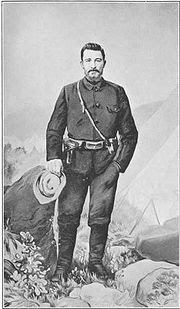

Major Hogan: Surprised to see me, Richard? Well you've done a grand job, a grand job. But now, at dawn tomorrow, with the help of my agent Commandante Teresa, who I believe you've met, I want you to seize the chapel at Torre Castro and hold it against all comers until Major Vivar has raised the gonfalon of Santiago over the chapel roof.
Richard Sharpe: Seize Torre Castro? With six men and a straggle of Spaniards? Can't be done! May I remind you of our main mission, sir? To find a missing gentleman?
Major Hogan: Not now, Richard. Our mission is Torre Castro. Spain is a sleeping tiger! If the people of Torre Castro rise up, even for an hour, the shock will shake the whole of Spain. Carry on, sir.
Richard Sharpe: Rise up? Do you really believe men will fight and die for a rag on a pole?
Major Hogan: You do, Richard, you do.
-- Sharpe's Rifles, 1993.
Men of MacBride's Irish Transvaal Brigade during the Boer War, 1899.On the 4th of March 1902, Confederate veteran Dr. Orion T. Dozier presented the poem, "For Freedom Float the Flags I Love", to the Gaelic Literary Guild's Robert Emmet Anniversary celebration at the Jefferson Theatre in Birmingham, Alabama. The Second Anglo-Boer War was sputtering to a conclusion of Boer defeat and English victory when Dozier rose to speak. It must have brought back bitter memories of 1865 to the good Doctor. In the poem, which I reprint only in part here, Dozier is struck by the similarity of the flags and the men of three lost causes: the Confederacy, the struggle for Irish independence and the Boer's failed war against the British Empire. He also uses the poem to criticize the United States' new imperialism at the time, exemplified by the campaign to subdue the Philippine Insurrection.
There was much sympathetic sentiment among Irish nationalists for the plight of the Boers and John MacBride, a friend of Arthur Griffith's, organised the Irish Transvaal Brigade by recruiting Irish or Irish-American miners living in the Transvaal.
The brigade (also known as MacBride's Brigade) was operational from September 1899 to September 1900. In that time, the brigade fought in about 20 engagements, with 18 men killed and about 70 wounded from a compliment of no more than about 500 men at any one time. When it disbanded, most of the men crossed into Mozambique, which was a colony of neutral Portugal. Colonel John Y. F. Blake, a former United States Army officer was the brigade's commander. When he was wounded, his second-in-command, Major John MacBride, took command. At the Siege of Ladysmith, they serviced the famous Boer artillery piece, called Long Tom, and they fought at the Battle of Colenso. Having worked in the gold mines, they had a well deserved reputation as demolition experts and it was they who delayed the British advance on Pretoria by blowing up bridges. -- Wikipedia.
The Vierkleur flag of the Transvaal RepublicDozier refers to the Irish Transvaalers in his poem, marking their fight as a landmark in their own struggle for independence which Dozier predicted.
It was fitting that Dozier used the occasion of the celebration of the birth of Robert Emmet to sing the praises of lost causes, for Emmet represented what, up until that time was the quintessential lost cause.
The Leinster flag was used by the United Irishmen in 1789 and the Irish Republican Brotherhood (IRB). Robert Emmet, born on the 4th of March, 1778, was an Irish nationalist leader who led an abortive rebellion against British rule in 1803 and was captured, tried and executed on September 20th, 1803. emmet was enshrined in the Irish nationalist canon by the fortitude with which he met his death and the eloquence that he displayed in his "Speech from the Dock," after he had been sentenced to death. An excerpt:
“ Let no man write my epitaph; for as no man who knows my motives dare now vindicate them, let not prejudice or ignorance, asperse them. Let them and me rest in obscurity and peace, and my tomb remain uninscribed, and my memory in oblivion, until other times and other men can do justice to my character. When my country takes her place among the nations of the earth, then and not till then, let my epitaph be written. I have done.”
On 19 September, 1803, Emmet was found guilty of high treason, and the death sentence required that he be hanged, drawn and quartered. He was executed the following day by hanging, and was beheaded after death. His remains were secretly buried and their location remains a mystery to this day.
Dozier's poem is long, excessively so in my opinion, and becomes lurid with bloody predictions of an exiled Irish army and navy coming to drive the British from their native land in an invasion of horse, foot and artillery -- a campaign that was the dream of every turn-of-the-Twentieth Century Fenian -- but which was hopelessly outdated and frankly militarily impossible when the Confederate veteran wrote it.
But it is the first part of the poem which speaks to me here, over a hundred years later in the opening decade of the 21st Century. See if it speaks also to you:
I love the man who loves his God,
His country and his fellow-man,
No matter what his state or birth,
No matter what his creed or clan;
And in my very inmost heart,
In spite of all that fates decree,
I love him ever more and more,
The more he loves his liberty.
I love the flags, the fallen flags,
Of every land of all the world
By men upreared in freedom's cause,
But which oppression's hands have furled.
Their memory, like a sweet incense,
A fragrance sheds, all hearts to thrill,
And keeps aglow the lingering spark
Of liberty remaining still.
And by my faith in living God,
I still maintain that free consent
Of subjects is the only grant
Entailing right of Government.
That conquest only paves the way
For brigands and despotic might,
Which in the sight of Holy God
Was never, nor can e'er be right.
I love the glorious stars and stripes,
My great fore-father's flag and mine;
It gives me joy to see it wave
Where'er it floats o'er Freedom's shrine,
But if profaned by traitor hands,
To subjugate on foreign shore
A nation struggling to be free,
If I were there, -- 'twere mine no more.
Nor would I follow in its wake,
Nor treat with those who thus offend,
For all who dare that flag pervert,
Deserve the death which has no end.
And rather than that I should aid
In such unjust, unholy shame,
I'd suffer this warm heart of mine
Torn from my breast and cast in flame.
But if there be on this wide earth
A people bowed by galling yoke
Of tyrant, Emperor, King, or Czar,
Who would be free, and should invoke
"Old Glory's" shielding strength and might,
Before God I'd bid it fly
And with it there myself would go,
To make them free, or 'neath it die.
I love the flag, the honored flag,
Now drooping o'er the dying Boer,
'Tis tattered, drooping, sinking low;
Perhaps to float on earth no more.
But braver deeds in freedpm's cause
Were never done by sons of Mars,
Than those beneath Paul Kruger's flag,
Old Erin's and the Stars and Bars.
The Stars and Bars of the Confederate States of AmericaAnd well may England stand aghast
While she reviews the awful cost,
And contemplates the countless graves
Filled with the legions she has lost
In trampling down that honored flag,
Since well she knows not all her dead
Were stricken down by native Boers,
For thousands died of Irish lead.
Nor will the Irish e'er forget
To right the wrongs of England's might,
Nor ever shirk or slight a chance
To show how they love to fight
'Neath any flag in freedom's cause,
Her mean, rapacious course to check,
While she retains her despot heel
Upon their prostrate country's neck.
Nor love I less old Erin's flag,
Kept sacred thro' the countless years
Unspotted by a single stain,
Save by a loving people's tears.
I love it for its sacred cause,
A cause forever dear to me, --
The right ordained of God to man, --
The right inherent to be free.
Its hue, the shamrock's living green,
whose roots lie deep in mother sod,
And like that plant, tho' crushed and torn,
That flag though under foot be trod
Survives in spite of time and fate,
And like the sun in yonder sky
Comes forth renewed at every turn,
By God ordained never to die.
Born in the love of liberty,
By faith enshrined in every heart
That beats in breast of patriot
Disdainful of the tyrant's art;
That flag shall yet triumphant wave
Above the land that gave it birth,
And kissed by every ocean breeze.
Be hailed in every port on earth.
There is more, but this first half of Dr. Dozier's poem speaks to me across the years. Ireland's flag did finally wave over Irish soil, but it was not as the result of a U.S.-led Fenian invasion but of guerrilla war -- a guerrilla war designed largely by Michael Collins and based upon the lessons taught by the great Boer leader, Christiaan de Wet.

Christiaan de Wet, Boer guerrilla leader.Collins studied de Wet's campaigns, and incorporated their lessons into the concept of the "flying columns." Collins did so with the assumption that the British could never introduce -- do close to home -- the barbarous tactics of scorched earth and concentration camps for Boer women and children which broke the back of Boer resistance. In the end, he was right.
But let us for a moment back up to this verse of Dozier:
Nor would I follow in its wake,
Nor treat with those who thus offend,
For all who dare that flag pervert,
Deserve the death which has no end.
And rather than that I should aid
In such unjust, unholy shame,
I'd suffer this warm heart of mine
Torn from my breast and cast in flame.
You see, this is the difficult thing we face -- now, today, in the near future. "For all who dare that flag pervert." The thing is, the people who are even now laying claim to more of our liberty and property will send men to enforce their will. And when they do, they will be flying this flag:

It happens that this is our flag, too. Who then is entitled to claim it? Whose vision shall, in the end, this flag represent? The Founders? Or the collectivists who have risen to power determined to kill off once and for all their Republic? Whose flag is it?
I know this. If it is still to be ours, we must fight for it. We must fight for the restoration of what the Founders meant by it. We must, and will, fight for that "rag on a pole," and for all the Founders' meant by it and all the additional meaning added to it by generation after generation of bloody sacrifice sustaining the liberty it represents.
They will claim it. We must reclaim it. Make ready.
(Author's note: Before you folks start screaming about neglecting the novel, you should know that this is a part of one of the chapters and thus I had to transcribe it anyway. You will see how it fits into the narrative of the book in short order. This will not, I realize, be enough to keep some of you from complaining. I shall bear your misplaced calumny with fortitude. MBV)